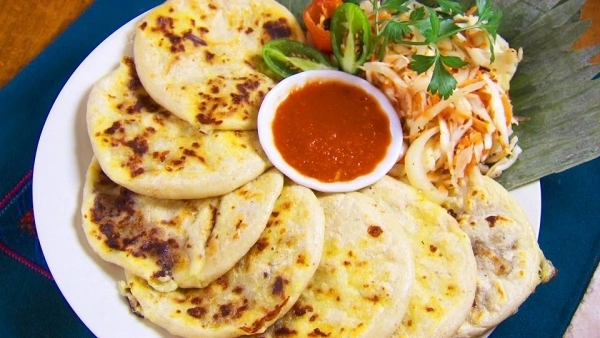
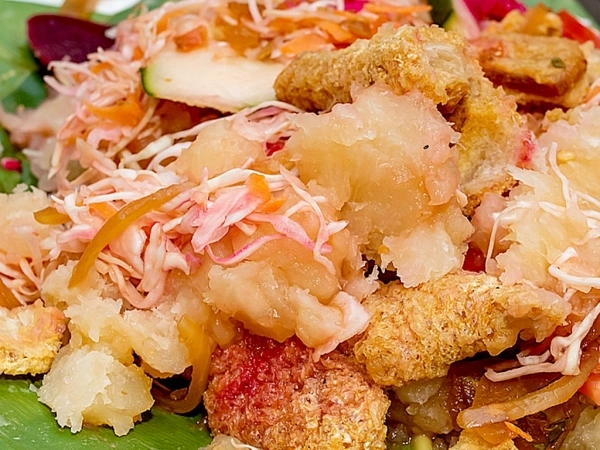
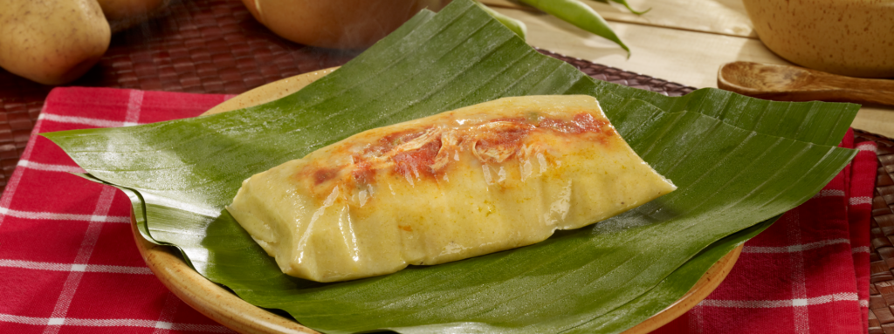

Pupusas, yuca frita, tamales y experiencias gastronómicas inolvidables.
Reservar MesaSomos un tour gastronómico salvadoreño dedicado a compartir la cultura y tradición culinaria de nuestro país. Nuestro menú está inspirado en recetas tradicionales transmitidas de generación en generación.

Elaboradas artesanalmente con queso, frijoles y chicharrón.

Crujiente y acompañada de curtido y salsa casera.

Preparados con ingredientes frescos y recetas tradicionales.